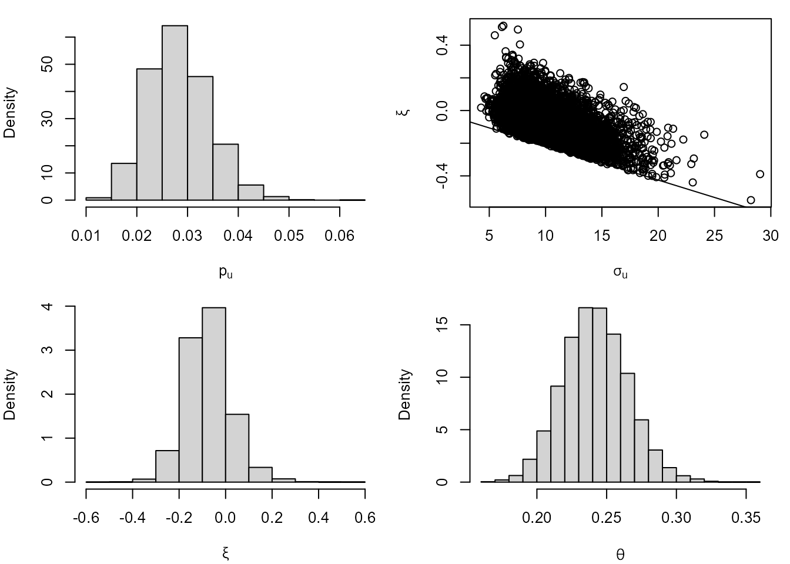

Bayesian Likelihood-Based Inference for Time Series Extremes
Paul Northrop
2026-01-04
Source:vignettes/lite-2-bayesian.Rmd
lite-2-bayesian.RmdFor information about the model underlying the inferences performed in this vignette, including the (adjusted) likelihood for \((p_u, \sigma_u, \xi, \theta)\) and the Cheeseboro wind gusts dataset used below, see the vignette Frequentist Likelihood-Based Inference for Time Series Extremes.
Bayesian inferences for model parameters
We perform Bayesian inference for \((p_u, \sigma_u, \xi, \theta)\), combining a likelihood with a prior distribution for these parameters. For \(\theta\) the likelihood is based on the \(K\)-gaps model. For \((p_u, \sigma_u, \xi)\) the likelihood is based on vertically-adjusted log-likelihoods for \(p_u\) and \((\sigma_u, \xi)\). This latter aspect is an example of Bayesian inference using a composite likelihood (Ribatet, Cooley, and Davison (2012)).
Currently, lite allows only priors where \(p_u\), \((\sigma_u, \xi\)) and \(\theta\) are independent a priori. In the
example below, we use the blite function’s default priors
for the exceedance probability \(p_u\)
(the Jeffreys’ prior), the generalised Pareto parameters \((\sigma_u, \xi)\) (and maximal data
information prior) and \(\theta\) (a
uniform prior on [0,1]). Different priors can be set using the
respective arguments gp_prior, b_prior and
theta_prior_pars.
The blite function samples from the posterior
distribution for \((p_u, \sigma_u,
\xi)\) based on vertically-adjusted log-likelihoods for \(p_u\) and \((\sigma_u, \xi)\). To use unadjusted
log-likelihoods set the argument type = "none".
library(lite)
cdata <- exdex::cheeseboro
# Each column of the matrix cdata corresponds to data from a different year
# blite() sets cluster automatically to correspond to column (year)
cpost <- blite(cdata, u = 45, k = 3, ny = 31 * 24, n = 10000)The summary and plot methods produce
numerical and graphical marginal summaries of the posterior samples.
summary(cpost)
#>
#> Call:
#> blite(data = cdata, u = 45, k = 3, ny = 31 * 24, n = 10000)
#>
#> Posterior mean Posterior SD
#> p[u] 0.02824 0.005994
#> sigma[u] 9.96700 2.366000
#> xi -0.07329 0.094990
#> theta 0.24250 0.023620
plot(cpost)
Predictive inference
We perform posterior predictive inference for the largest value \(M_N\) to be observed over a future time
period of length \(N\) years. Objects
returned from the blite function have a
predict method based on the predict.evpost
method in the revdbayes package (Northrop 2020). See the Posterior Predictive
Extreme Value Inference using the revdbayes Package vignette for
information. The effect of adjusting for the values of the extremal
index in the posterior sample is to change the effective time horizon
from \(N\) to \(\theta N\).
The function predict.blite can estimate predictive
intervals, quantiles, distribution and density functions for \(M_N\) and simulate from the predictive
distribution for \(M_N\). For example,
the following code estimates a 95% highest predictive density (HPD)
interval for \(M_{100}\) and plots the
predictive densities of \(M_{100}\) and
\(M_{1000}\).
# Interval estimation
predict(cpost, hpd = TRUE)$short
#> lower upper n_years level
#> [1,] 72.97895 140.3119 100 95